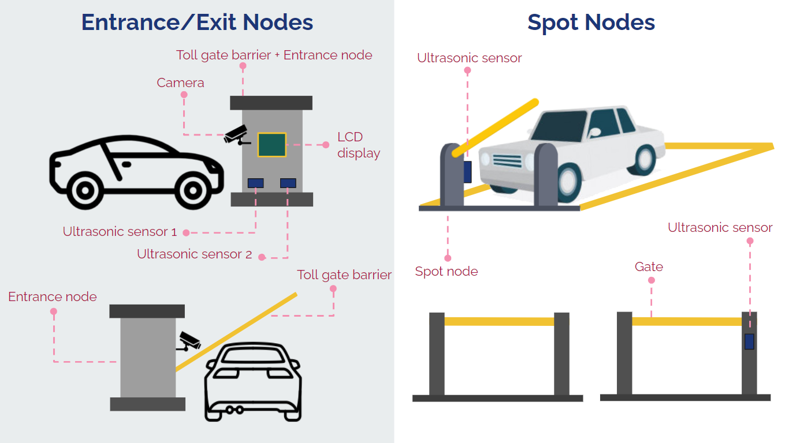
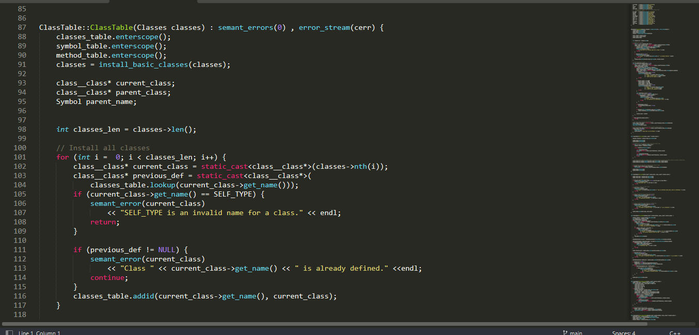
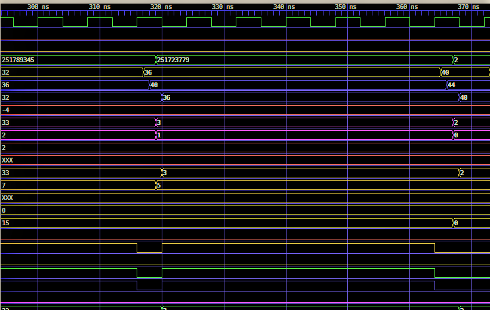

|
I am a third-year undergraduate from the Department of Computer Engineering of University of Peradeniya, showing a strong interest in areas related to Machine Learning and AI. I have thorough knowledge on many Machine Learning-based theoretical concepts and have contributed to several projects covering many areas. During my coursework, I have also developed a passion for Artificial Intelligence and Data Analysis. |
{kind=link}
|
|
|


|
Imesh Balasuriya, Ravisha Rupasinghe, Sandun Perera July - October 2021 GitHub page
This project aims at eliminating the overheads and inefficiencies associated with manual parking systems in order to provide a comprehensive solution that addresses the concerns of both the consumers as well as the owners of the parking lot.
|
 |
Imesh Balasuriya, Ravisha Rupasinghe, Madhushan Ramalingam February 2022 - Present GitHub page
Our goal is to minimize the inefficiencies faced by professionals who conduct NGS for Chloroplast, Mitochondria and plant ITS regions by developing a complete solution that incorporates existing DNA sequencing pipelines into a single environment that is both intuitive and accessible.
|
|  |
Imesh Balasuriya, Ravisha Rupasinghe January 2022 - April 2022
Compiler implementation for the COOL programming language from scratch, developed for the CO521 - Compilers
course.
|
|
|
November 2020 - December 2020 GitHub page
Design and implementation of a software that plots two of the most popular fractals: Mandelbrot set and Julia set.
|
|  |
July 2020 - October 2020
Design and implementation of a simple 8-bit single-cycle processor which includes an ALU, a register file and control
logic, using Verilog HDL.
|